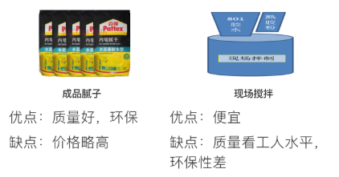

1.钢丝网片是墙面有裂痕或新壳墙交界处先挂网再 批抹布。
2.网格布是抹灰层油裂纹，防止乳胶漆开裂做的。
很多攻略说看各种技术参数，比如看漆膜、看附着、看环保，个人感觉是浪费时间，你让写攻略的人去看他也未必看的出名堂。
我们认为就是看品牌，国外品牌比如都芳、大师等好于国内品牌，没有什么好多说的。比如都芳漆，水性漆环保不用多说，笔者曾看过由于屋面漏水，都芳漆仅仅靠漆膜兜住碟子那么大面积的水而不破，光滑湿布擦完全没问题，但要注意其有国内产的油漆，国外漆好是好在标准高于国标，所以买这种品牌就买它的进口系列。
大品牌油漆都是一分钱一分货，业主需要担心的某大品牌一个名字几个型号，全系列几十个型号，而且价格差异非常大，良心不好，就是为了方便装修公司报价忽悠业主按大品牌笼络业主，其实是相对比较差的型号，这些品牌了解大多数业主购买次数比较少，而装修公司购买次数多，为了讨好装修公司搞出来的。当然这个大品牌的低档漆也是满足环保等国家标准的。
再一个关注品牌是否为真品，建议去那些有品牌授权的店购买，有工人小心翼翼的撬开你购买的油漆桶，然后干干净净的带走了，有不法商家回收再利用的。
有没有工人会换你家的漆？当然有。你买好的乳胶漆记得拿硬物从头到尾划出痕迹，一为了自己的漆不被替换，二也是为了不要让二手油漆桶害了其他人。网购一些便宜漆说是厂家内部拿货，那些大品牌哪来的这种渠道啊，是担心造价的毁自己毁的不够快吗？结论我不下了。
另外品牌油漆，尤其是一些国外品牌的油漆，施工方法与传统乳胶漆有区别，一定要按照说明书施工，加水不加水都看说明，不能工人为了自己容易涂刷擅自加水或者多加水。如果工人有意见业主一定坚持按照厂家说明，否则等于买了宝马去耕田，花钱还不好，影响漆膜厚度，最终导致质量问题。
装修公司代采购的乳胶漆怎么样？
那完全看良心，业主自己衡量，反正省下的钱是装修公司的，包装前文已经说了，看不出的，谁也没火眼晶晶，建议业主这是自己的家，装修不能偷懒，该自购别说自己忙，自己累，你不是住一年两年。
乳胶漆遍数：
一般都是一底两面，有人说不刷底漆，这是扯，抹灰面一般都有一定的碱性，底漆用于封闭碱性，防止墙面返碱，怎么能不做呢？具体看厂家说明。
是不是越贵越好？
我经常看卖建材的人说三分料七分工，我不否认好的材料也要有好的施工水平才能达到最佳，但这种说法纯属误导。首先同等技术水平当然材料好会有更好的效果。再有乳胶漆是个对装修公司和油漆工非常透明的行业，业主这种零散采购对厂家影响力极小，漆的好坏与价格对行业内是透明的，所以漆当然是一分钱一分货。但有一点，业主应该根据自己的预算来挑选合适的乳胶漆，一般来说中间价格的型号性价比比较高。
喷涂还是滚涂？
看业主自己喜好，我觉得滚涂够了，当然喷涂更光滑一点，不管啥涂，都不能有“泪”，就是像眼泪一样的凸点。
乳胶漆会不会掉粉？
品牌乳胶漆正确涂刷干燥后不会掉粉，现场施工的灰尘倒是有。
乳胶漆刷墙，木器漆刷木头，都有底漆面漆
都芳、PPG大师漆、嘉宝莉、美涂士、多乐士、紫荆花、立邦、三棵树、华润、大宝漆；纯进口的有芬琳、福乐阁等

如果业主选择现场拌制，那一定注意尽量使用“中南”等品牌胶水。
成品腻子中的石膏基与灰钙基比较便宜，但相对稳定性、耐水性不如水泥基。
选成品腻子是否有必要？有必要，腻子相对乳胶漆价格便宜很多，好漆配好腻子才能更好的发挥乳胶漆的效果。
圣戈班、拉法基、可耐福、百得